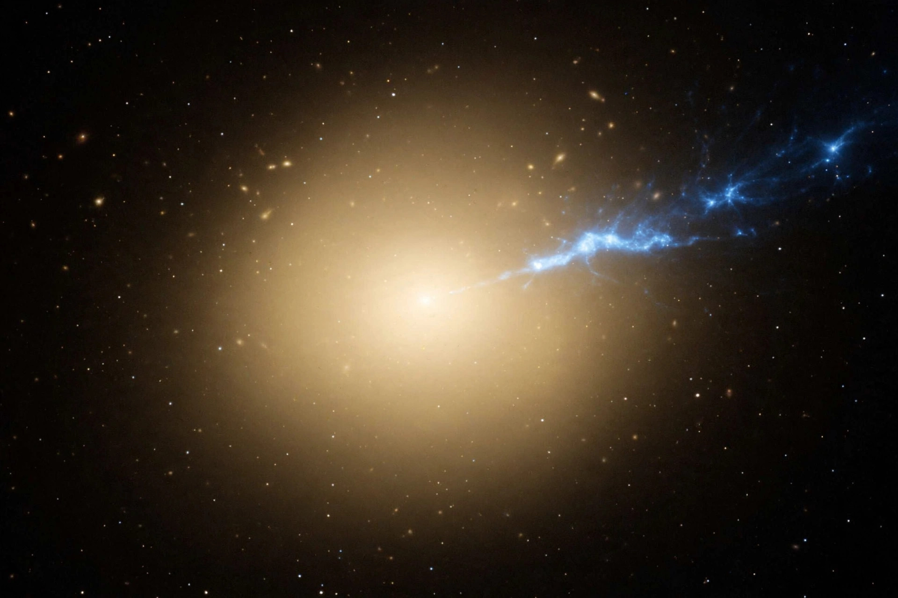

| Constellation | Virgo |
|---|---|
| Type | Supergiant elliptical galaxy (E0–1) |
| Distance | ≈53.5 million light-years |
| Other designations | Virgo A, NGC 4486 |
| Notable feature | First black hole ever imaged (2019) |
Messier 87 (also known as Virgo A or NGC 4486, and generally abbreviated to M87) is a supergiant elliptical galaxy in the constellation Virgo and one of the most massive galaxies in the local universe. It is the dominant galaxy at the centre of the Virgo Cluster and lies about 53.5 million light-years from Earth.
M87 contains several trillion stars and an unusually large population of around 12,000 globular clusters — compared with a few hundred around the Milky Way. In 1918 Heber Curtis observed a "curious straight ray" emerging from the galaxy: the first astrophysical jet ever described, a beam of plasma expelled from the core at relativistic speeds. The galaxy is one of the strongest radio sources in the sky and an intense source of X-rays and gamma rays.
At the heart of M87 lies a supermassive black hole of roughly 6.5 billion solar masses, one of the largest known. On 10 April 2019, the Event Horizon Telescope collaboration released the first direct image of a black hole — a glowing orange ring of hot gas surrounding the shadow of M87's black hole — obtained from observations made in April 2017. In 2023 the collaboration released a refined image and a view showing the black hole shadow together with the base of the jet. The jet, extending at least 5,000 light-years, has been studied across the electromagnetic spectrum and shows knots moving at apparent superluminal speeds.